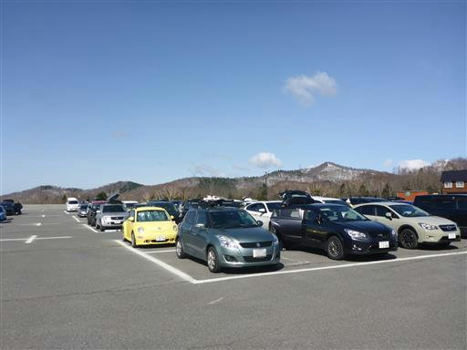
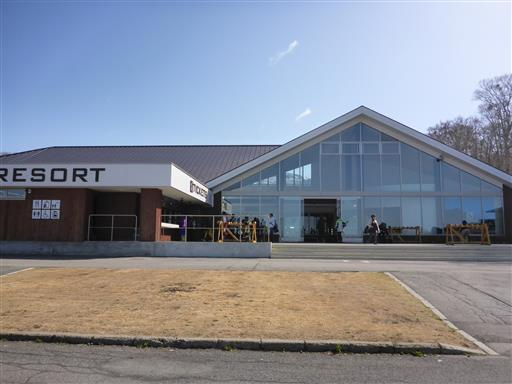
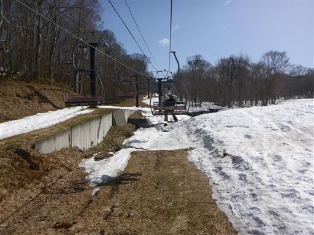
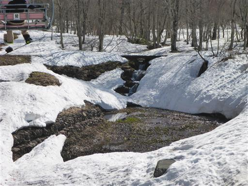
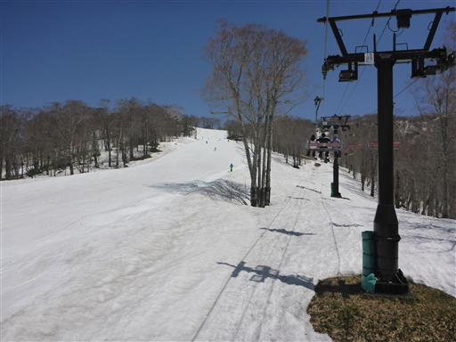
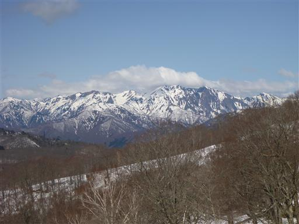
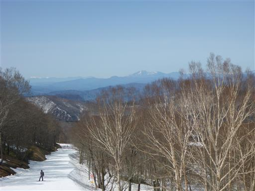
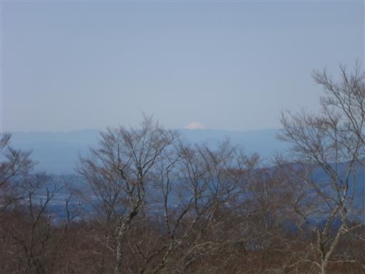
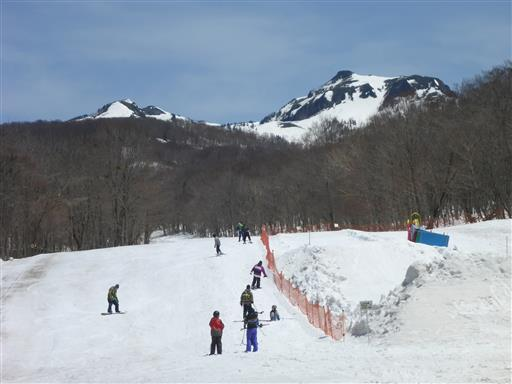
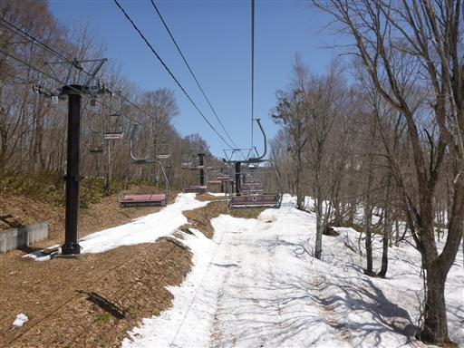

| 日付 | 2017年5月2日（火） |
|---|---|
| メンバー | 単独 |
| アクセス | 車 |
本日はGWの中日。妻は仕事、子供は学校に行っているため、
一人でスキーに行くことにする。
たんばらスノーパークはこの時期でも開いている数少ないスキー場。
昨年末に登った鹿俣山にあったスキー場だ。
駐車場に到着。広大な駐車場だが車の数は多くない。

建物は新しくてきれいだ。スキーをレンタルし、リフトチケットを購入して入場だ。

ゲレンデ以外の場所の雪は、もうだいぶ解けている。
もっと雪のありそうなスキー場はもう閉じているのに、
このスキー場が開いているのはどういう理由なのだろう？

雪解け水が川を流れている。

第一リフトを下りたらその先に第二リフトがあるのだが、
第二リフトに乗る前にまずは初心者コースを滑ってみる。
傾斜が緩いゲレンデで他に滑っている人は誰もいない。

一本滑ったら、今度は第二リフトに乗り継いでさらに上部に向かう。
こちらには滑っている人たちがちらほらいるが、さほど混雑していない。
そして滑っている人はほとんどが中～上級者だ。

上部はバリエーションに富んだコースがある。
朝は雪が凍っていてとにかく固く、昼に近づくと雪が解け始める。いずれにせよすごく滑りにくい。
滑りの悪い雪に躓いてこけて、頭を打ってしまった。
皆難なく滑っているのだが、何が違うのだろう…？

本日は完璧な快晴で展望が非常に良い。
間近にある残雪に覆われた谷川岳は迫力がある。

遠くに浅間山の姿も見えている。

何と遥か彼方にある富士山までくっきりと見えている。
スキーの練習で、あまりゆっくり展望を見ている余裕がないのが残念だ。

お昼になって車に荷物をとるために一回下まで下りてくる。
ほとんどの人は上の方で滑っているため、こちらは閑散としている。キッズパークは無人で寂しい限りだ。
それもそのはずで、傾斜の緩いこのコースは、べちゃべちゃ雪だとストックで押さないと前に進まない。

再び無人の第一リフトに乗って上部に向かう。
今回は初めてレッスンを受けずにずっと自主練習を続けたが、少しは上手になっただろうか？
今シーズンのスキーはこれでおしまいだが、来シーズンになったらかなり忘れていそうだ。
